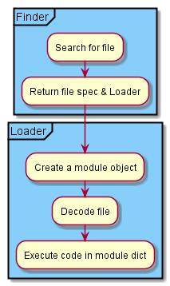
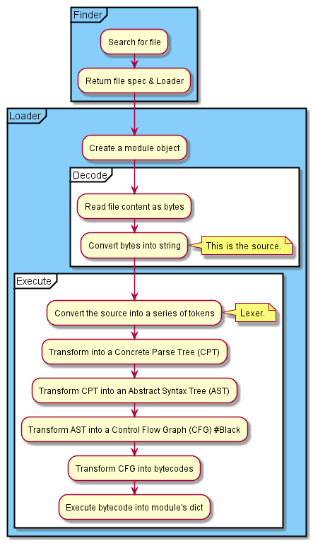
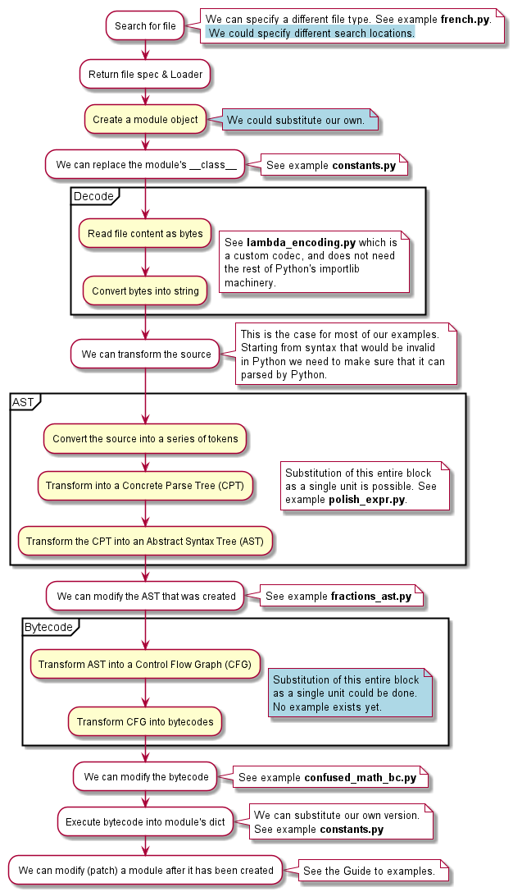

A deep dive
In Python, an import hook has two main components:
A Finder which looks for the code (usually a .py file) that is requested by an
importstatementA Loader which retrieves the source code, executes it, an returns a module object.
The order of execution is the following

The diagram above illustrates only the main steps. These can be broken down further as follows.

Using Ideas
Normally, for creating import hooks and as shown above,
it is important to distinguish
the two main phases, that is creating a Finder and a Loader.
Using ideas, these are automatically done for us, and we can focus
on various parts over which we can have control.
In the diagram below:
Inside each of the major blocks (Decode, AST, Bytecode), we don’t have control over the individual components; however, we could, in principle, substitute our own version of the entire block.
There exists at least one example for anything (excluding major blocks) with a white background.
Anything with a light blue background indicates that some examples of this should be doable. Ideally, at least one example of each possible case should be added.

Options to create a custom hook
About Decode
In the last diagram shown above, there is a block labeled ‘Decode’. Changing the way that Python processes code during this phase does not require the creation of an import hook; instead, it requires the use of a custom codec.
An example is shown in the Guide to examples.